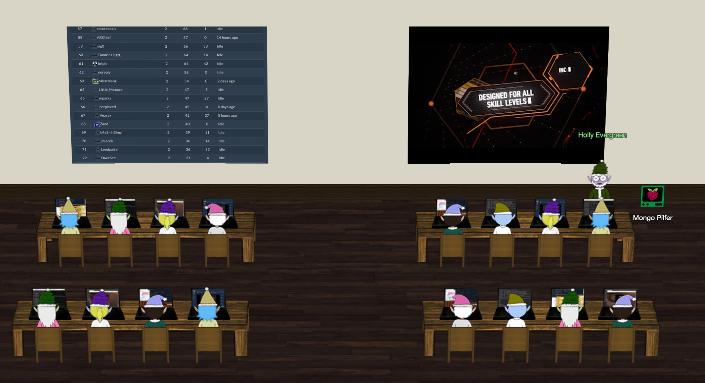
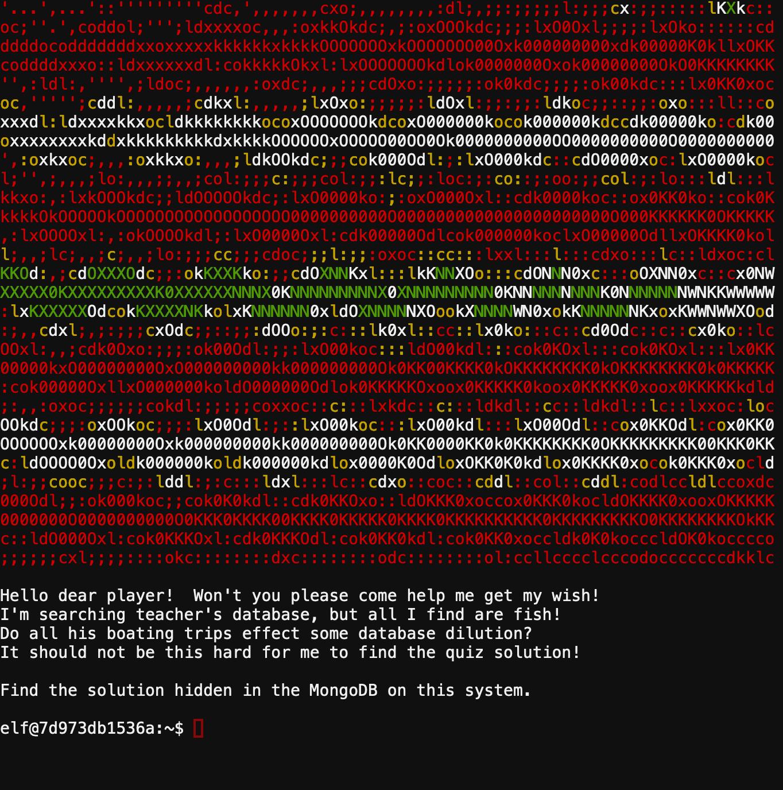
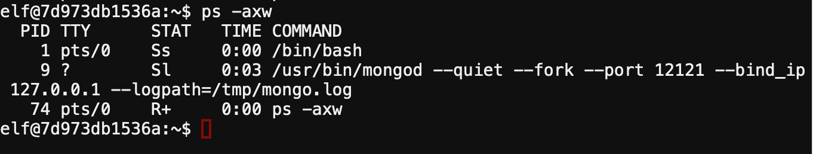

Mongo Pilfer
üéÆ Mongo Pilfer¶
üìç NetWars Room

üßùü誂Äç‚ôÇÔ∏è Holly Evergreen
Hey! It's me, Holly Evergreen! My teacher has been locked out of the quiz database and can't remember the right solution.
Without access to the answer, none of our quizzes will get graded.
Can we help get back in to find that solution?
I tried lsof -i, but that tool doesn't seem to be installed.
I think there's a tool like ps that'll help too. What are the flags I need?
Either way, you'll need to know a teensy bit of Mongo once you're in.
Pretty please find us the solution to the quiz!
MongoDB
Find the solution hidden in the MongoDB on this system.
‚ö°Ô∏è Solution¶
When You open the Cranberry Pi terminal, You see:

To connect to Mongo Shell we use mongo to connect to local host on default port 270171
mongo
So we need to find the correct port number to connect.
Using ps2 to show the running processes :
ps -axw
-alists processes started by all users.
-xalso lists processes started at boot like daemons.
-wto wrap the output.

The correct port is 12121, let's connect to the Mongo Shell :
mongo --port 12121
To see the databases:
show dbs
We have 5 databases
admin 0.000GB config 0.000GB elfu 0.000GB local 0.000GB test 0.000GB
Let's select elfu database to use
use elfu
Then show it's collections
show collections
Elfu db collections:
ait chum line metadata solution system.js tackle tincan
Check the solution collection
db.solution.find()
{ "_id" : "You did good! Just run the command between the stars: ** db.loadServerScripts();displaySolution(); **" }
Run the command to get the flag!
db.loadServerScripts();displaySolution();
Alternative Solution | mongodump
By using mongodump command to dump all databases:
mongodump --port 12121

then search the dump by grep
grep -Ril "solution"
istands for ignore case (optional in your case).
Rstands for recursive.
lstands for "show the file name, not the result itself".
.stands for current folder.
dump/elfu/solution.metadata.json dump/elfu/solution.bson
then read the bson file content
cat dump/elfu/solution.bson
t_id fYou did good! Just run the command between the stars: ** db.loadServerScripts();displaySolution(); **
then connect to mongo shell and run the command on the elfu db
mongo --port 12121; use elfu; db.loadServerScripts();displaySolution();
You have completed the Mongo Pilfer challenge! üéâ
üßùü誂Äç‚ôÇÔ∏è Holly Evergreen
Woohoo! Fantabulous! I'll be the coolest elf in class.
On a completely unrelated note, digital rights management can bring a hacking elf down.
That ElfScrow one can really be a hassle. It's a good thing Ron Bowes is giving a talk on reverse engineering!
That guy knows how to rip a thing apart. It's like he breathes opcodes!
üéì What you've learned¶
- How to connect to mongo shell and find correct port.
- Finding databases. collections.
- dumping databases.